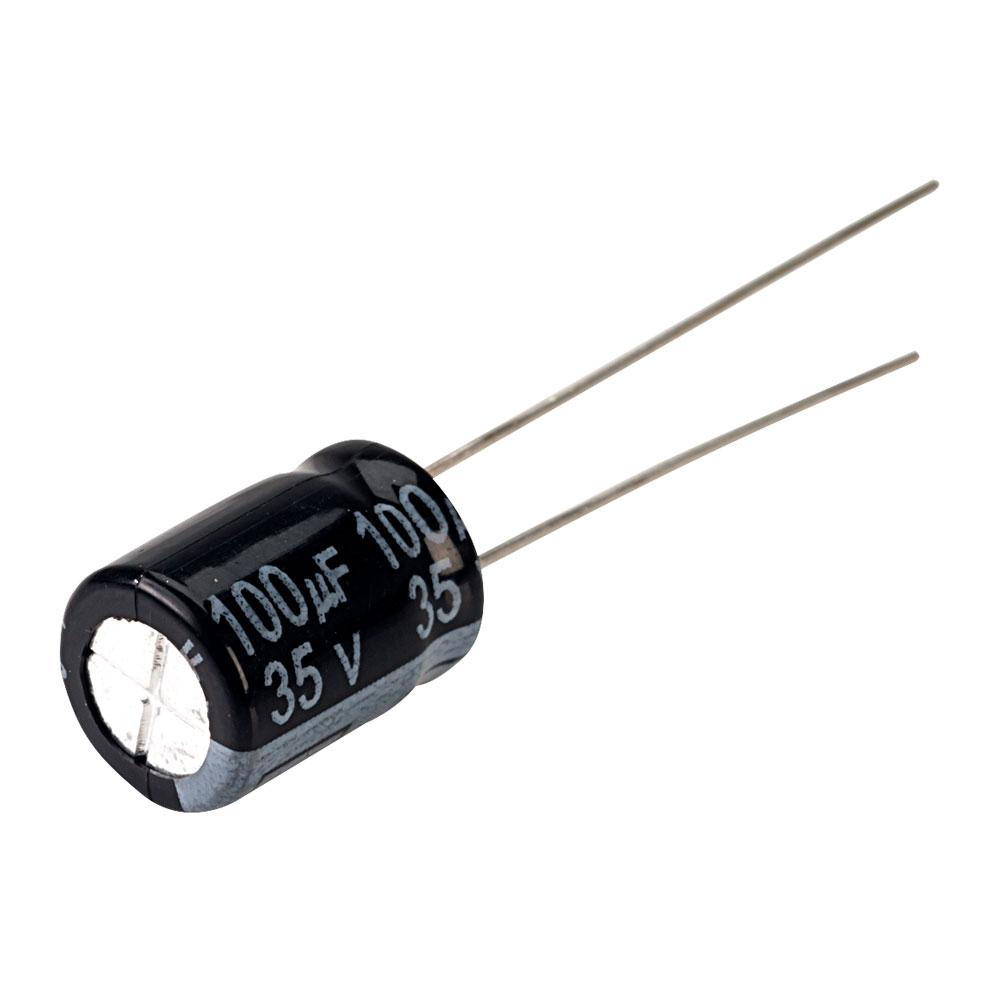
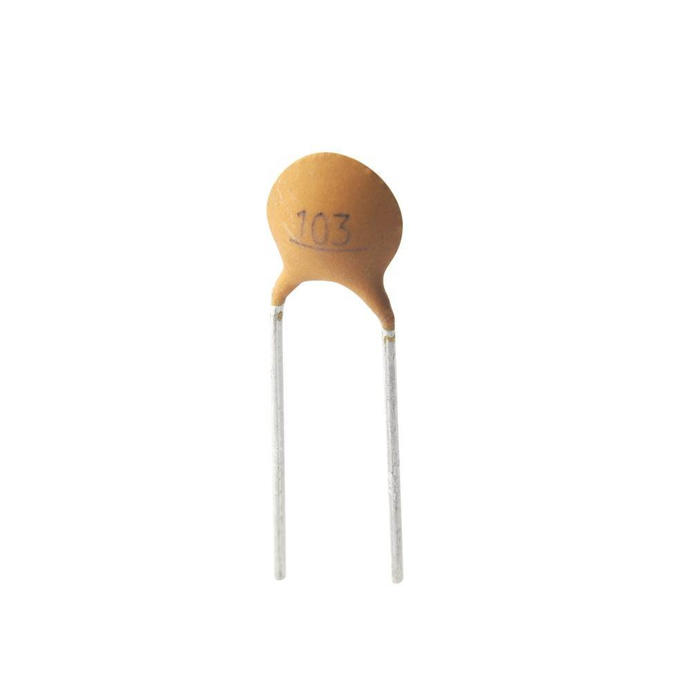
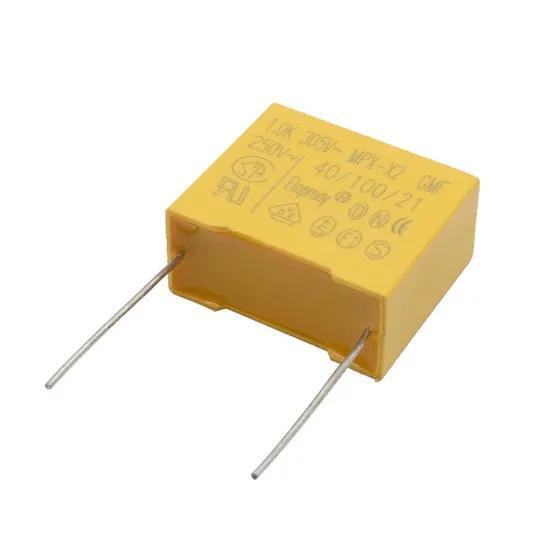
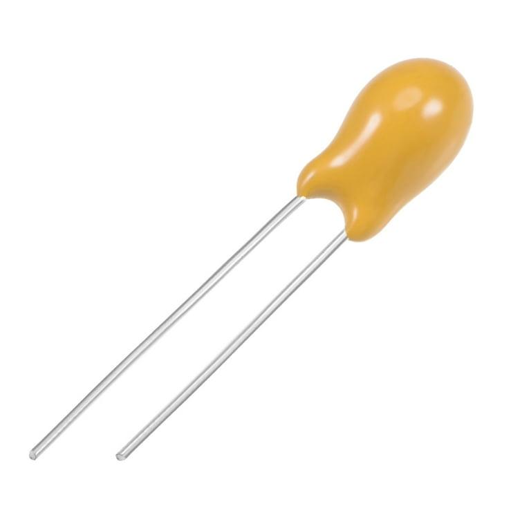
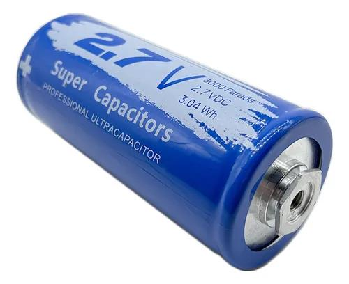
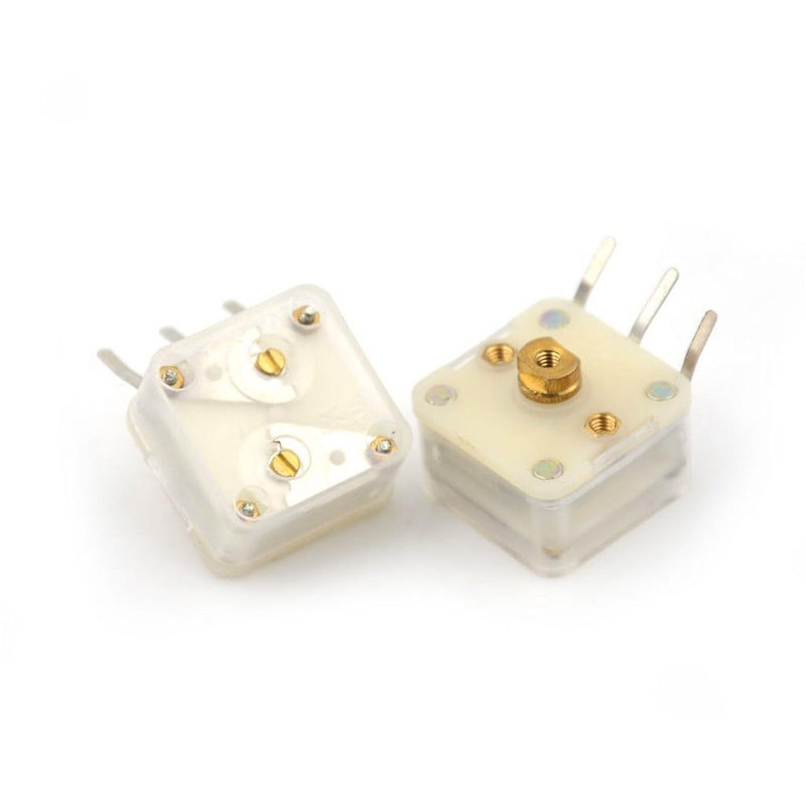
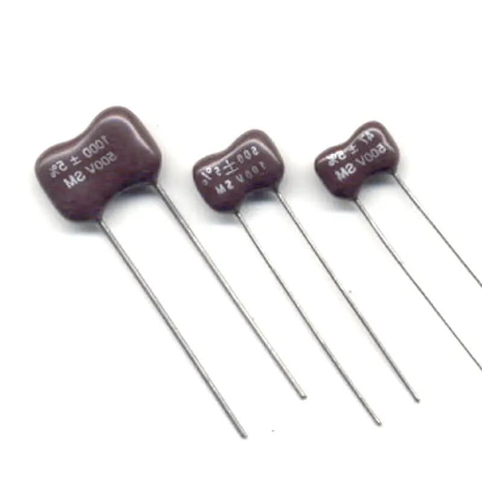
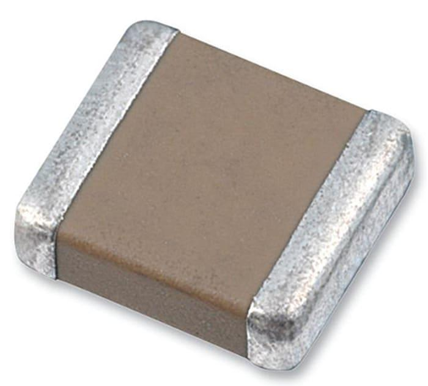

ตัวเก็บประจุ (Capacitor)
Capacitor
ชนิด • Q = CV • RC Time Constant • อ่านรหัส • Tolerance • วงจรอนุกรม/ขนาน
Types • Q = CV • RC Time Constant • Reading codes • Tolerance • Series/Parallel
- อธิบายหลักการเก็บประจุและพลังงานในสนามไฟฟ้าของตัวเก็บประจุได้
- บอกชนิดของตัวเก็บประจุและการเลือกใช้งานได้
- อ่านค่าความจุจากรหัสตัวเลขและหน่วย pF / nF / µF ได้
- คำนวณค่าความจุรวมแบบอนุกรมและขนานได้
- อธิบายการประจุ/คายประจุและค่าคงที่เวลา (τ = RC) ได้
- Explain how a capacitor stores charge and energy in an electric field
- Identify capacitor types and how to choose them
- Read capacitance from numeric codes and the pF / nF / µF units
- Calculate total capacitance in series and parallel
- Explain charging/discharging and the time constant (τ = RC)
- เก็บและปล่อยพลังงานในรูปสนามไฟฟ้า
- ต่อต้านการเปลี่ยนแปลงแรงดัน (oppose ΔV)
- กรองความถี่ (Filter) และ Block DC
- ใช้ใน Timing, Coupling, Bypass, Power supply
- Store and release energy as an electric field
- Oppose changes in voltage (oppose ΔV)
- Filter frequencies and block DC
- Used in Timing, Coupling, Bypass, Power supply circuits
ก่อนเลือกใช้งานให้ดู 3 อย่างเสมอ:
① มีขั้วหรือไม่ (มีขั้ว = ห้ามต่อกลับขั้ว ระเบิดได้)
② ช่วงค่าความจุ (pF / nF / μF)
③ แรงดันทนได้ (ต้องสูงกว่าแรงดันใช้งานจริง) 💡 Key things to check
Always look at 3 things before choosing one:
① Polarized? (polarized = never reverse it — it can explode)
② Capacitance range (pF / nF / μF)
③ Voltage rating (must exceed your working voltage)

🛢️ อิเล็กโทรไลติกElectrolytic
ทรงกระบอกโลหะ ใช้ฟอยล์อะลูมิเนียมม้วนกับสารอิเล็กโทรไลต์ ทำให้ได้ ค่าความจุสูงมากในขนาดเล็ก แต่ ต้องต่อให้ถูกขั้ว (ขาสั้น/แถบขาว = ลบ) ค่าคลาดเคลื่อนสูง (±20%) และเสื่อมตามอายุ/ความร้อน
Metal can using rolled aluminium foil with an electrolyte, giving a very high capacitance in a small size, but it must be wired the right way round (short leg / white stripe = negative). Loose tolerance (±20%) and ages with heat/time.

⚪ เซรามิกCeramic
เม็ดกลมสีน้ำตาล/ฟ้า หรือแบบ SMD เป็นชนิดที่พบบ่อยที่สุด ราคาถูก เล็ก ตอบสนองความถี่สูงดี ต่อทางไหนก็ได้ แต่ค่าความจุไม่สูงและอาจเปลี่ยนตามอุณหภูมิ/แรงดัน (เกรด X7R, Y5V)
Small brown/blue discs or SMD chips — the most common type. Cheap, tiny, great at high frequency, and not polarized. Capacitance is limited and can drift with temperature/voltage (grades X7R, Y5V).

🟨 ฟิล์ม (โพลีเอสเตอร์)Film (Polyester)
ก้อนสี่เหลี่ยมสีเหลือง/แดง ใช้แผ่นฟิล์มพลาสติกเป็นไดอิเล็กตริก ค่าเสถียร แม่นยำ ทนแรงดันสูง เสียงรบกวนต่ำ จึงนิยมในวงจรเสียงและวงจรตั้งเวลา ขนาดใหญ่กว่าเซรามิกที่ค่าเท่ากัน
Boxy yellow/red blocks using a plastic film dielectric. Stable, accurate, high-voltage and low-noise, so popular in audio and timing circuits. Bigger than a ceramic of the same value.

🟠 แทนทาลัมTantalum
หยดสีส้ม/เหลือง (แถบ = ขั้วบวก) เป็นอิเล็กโทรไลต์ชนิดหนึ่งที่ เล็กกว่า เสถียรกว่า อายุยืนกว่า แบบอะลูมิเนียม แต่ ราคาแพง และไวต่อการต่อกลับขั้ว/แรงดันเกิน (อาจลัดวงจรแล้วลุกไหม้)
Orange/yellow drops (stripe = positive). A type of electrolytic that is smaller, more stable and longer-lived than aluminium, but pricey and very sensitive to reverse polarity / over-voltage (can short and catch fire).

🔵 ซูเปอร์คาปาซิเตอร์Supercapacitor
ความจุ สูงมหาศาล (เป็นฟารัด) เก็บพลังงานได้เกือบเท่าแบตเตอรี่เล็กๆ แต่ แรงดันทนต่ำ (~2.5–5 V) ชาร์จ/คายเร็ว เหมาะกับการสำรองไฟชั่วคราว ไม่เหมาะกับงานความถี่สูง
A huge capacitance (whole farads) — stores nearly as much as a small battery, but with a low voltage rating (~2.5–5 V). Charges/discharges fast; good for short-term backup, not for high frequency.

🎛️ ปรับค่าได้Variable
หมุนหรือไขปรับเพื่อเปลี่ยน พื้นที่ซ้อนของแผ่นตัวนำ ทำให้ค่าความจุเปลี่ยนได้ ค่าน้อยมาก (pF) ใช้จูนความถี่ในวงจรวิทยุ — แบบเล็กไว้ปรับครั้งเดียวเรียกว่า ทริมเมอร์ (Trimmer)
Turned or screw-adjusted to change the overlapping area of the plates, varying the capacitance. Very small values (pF) used to tune radio frequencies — a tiny set-once version is called a trimmer.

🟤 ไมก้าMica
ใช้แผ่นแร่ ไมก้า เคลือบเงินเป็นไดอิเล็กตริก ให้ค่าที่ เสถียรและแม่นยำสูงมาก (±1%) ทนแรงดันสูง สูญเสียต่ำที่ความถี่สูง จึงเหมาะกับวงจร RF/จูนความถี่ แต่ค่าน้อยและราคาแพง
Uses a silver-coated mica mineral sheet as the dielectric, giving a very stable, accurate value (±1%), high voltage rating and low loss at high frequency — ideal for RF/tuning circuits, but low value and pricey.

▪️ เซรามิกชิป (MLCC)Ceramic Chip (MLCC)
เซรามิกหลายชั้นแบบ SMD (ติดผิวบอร์ด) ไม่มีขา — เป็นตัวเก็บประจุที่ พบมากที่สุดในอุปกรณ์ยุคใหม่ (มือถือ/คอมพิวเตอร์) เล็กมาก ราคาถูก ความถี่สูงดีเยี่ยม แต่ค่าอาจดริฟต์ตามแรงดัน/อุณหภูมิ (เกรด X7R, X5R, C0G)
Multilayer ceramic in an SMD (surface-mount) package with no leads — the most common capacitor in modern devices (phones/computers). Tiny, cheap, excellent at high frequency, but value can drift with voltage/temperature (grades X7R, X5R, C0G).
ตารางเปรียบเทียบอย่างย่อ
Quick comparison table
| ชนิดType | ขั้วPolarity | ช่วงค่าRange | จุดเด่นStrength | ข้อจำกัดWeakness |
|---|---|---|---|---|
| อิเล็กโทรไลติกElectrolytic | มีขั้วPolarized | 1 μF–10000 μF | ค่าสูง ราคาถูกHigh value, cheap | เสื่อม, คลาดเคลื่อนสูงAges, loose tolerance |
| เซรามิกCeramic | ไม่มีขั้วNon-pol. | 1 pF–1 μF | เล็ก ถูก ความถี่สูงดีTiny, cheap, HF | ค่าไม่สูง, ดริฟต์ตามอุณหภูมิLow value, drifts |
| ฟิล์มFilm | ไม่มีขั้วNon-pol. | 1 nF–10 μF | เสถียร แม่นยำ ทนแรงดันStable, accurate | ขนาดใหญ่กว่าBulkier |
| แทนทาลัมTantalum | มีขั้วPolarized | 0.1 μF–100 μF | เล็ก เสถียร อายุยืนSmall, stable | แพง, กลับขั้วแล้วไหม้Pricey, fragile |
| ซูเปอร์คาปSupercap | มีขั้วPolarized | 0.1 F–1000s F | ความจุมหาศาลHuge capacitance | แรงดันต่ำ, ช้าLow voltage, slow |
| ปรับค่าได้Variable | ไม่มีขั้วNon-pol. | 5 pF–500 pF | ปรับค่าได้Adjustable | ค่าน้อยมากVery small value |
| ไมก้าMica | ไม่มีขั้วNon-pol. | 1 pF–10 nF | แม่นยำสูง, RF ดีVery accurate, RF | ค่าน้อย, แพงLow value, pricey |
| เซรามิกชิป (MLCC)Ceramic chip (MLCC) | ไม่มีขั้วNon-pol. | 1 pF–100 µF | จิ๋ว, ถูก, พบบ่อยสุดTiny, cheap, ubiquitous | ดริฟต์ตามแรงดัน/อุณหภูมิDrifts with V/temp |
| สัญลักษณ์Symbol | ความหมายMeaning | หน่วยUnit |
|---|---|---|
| Q | ประจุที่เก็บได้Charge stored | Coulomb (C) |
| C | ค่าความจุCapacitance | Farad (F) |
| V | แรงดันที่คร่อมVoltage across | Volt (V) |
Cap 100 μF ถูกชาร์จด้วย 12 V
Q = 100×10⁻⁶ × 12 = 0.0012 C = 1.2 mC
พลังงานที่เก็บได้ (Energy stored)
E = ½ × C × V²
E = ½ × 100×10⁻⁶ × 12² = 7.2 mJ
100 μF cap charged to 12 V
Q = 100×10⁻⁶ × 12 = 0.0012 C = 1.2 mC
Energy stored
E = ½ × C × V²
E = ½ × 100×10⁻⁶ × 12² = 7.2 mJ
- τ (tau) = เวลาที่ Cap ชาร์จถึง 63.2% ของ Vmax
- ชาร์จเต็ม (99%) ≈ 5τ
- ดิสชาร์จเหลือ 37% ≈ 1τ
- ใช้คำนวณ Timing circuit, RC filter, RC oscillator
- τ (tau) = time to charge to 63.2% of Vmax
- Fully charged (99%) ≈ 5τ
- Discharged to 37% ≈ 1τ
- Used in timing circuits, RC filters, RC oscillators
R = 10 kΩ, C = 100 μF
τ = 10,000 × 100×10⁻⁶ = 1 วินาที
ชาร์จเต็มใน 5τ = 5 วินาที
ตาราง % แรงดันตามเวลา
1τ → 63.2% | 2τ → 86.5%
3τ → 95.0% | 4τ → 98.2%
5τ → 99.3% (ถือว่าเต็ม)
R = 10 kΩ, C = 100 μF
τ = 10,000 × 100×10⁻⁶ = 1 second
Fully charged in 5τ = 5 seconds
Voltage vs. time
1τ → 63.2% | 2τ → 86.5%
3τ → 95.0% | 4τ → 98.2%
5τ → 99.3% (considered full)
ปรับ R และ C แล้วดูกราฟแรงดันคร่อมตัวเก็บประจุ VC เปลี่ยนตามเวลา — สังเกตว่ารูปคลื่นเป็นเส้นโค้ง exponential เหมือนเดิมเสมอ แต่ τ = RC เป็นตัวกำหนดว่าเร็ว/ช้าแค่ไหน (ที่ 1τ ชาร์จถึง 63.2% และเต็มที่ ~5τ)
Adjust R and C and watch the capacitor voltage VC change over time — the curve shape is always the same exponential, but τ = RC sets how fast it happens (at 1τ it reaches 63.2%, and is essentially full by ~5τ).
- รหัส 3 หลัก: หลักที่ 1–2 = ค่า, หลักที่ 3 = ตัวคูณ (×10ⁿ pF)
- ตัวอักษรต่อท้าย = Tolerance (J/K/M)
- ตัวเลขเพิ่มเติม = Voltage rating (เช่น 50V, 100V)
- 3-digit code: digits 1–2 = value, digit 3 = multiplier (×10ⁿ pF)
- Trailing letter = Tolerance (J/K/M)
- Extra number = Voltage rating (e.g. 50V, 100V)
| รหัสCode | pF | nF | μF |
|---|---|---|---|
| 101 | 100 | 0.1 | — |
| 102 | 1,000 | 1 | 0.001 |
| 103 | 10,000 | 10 | 0.01 |
| 104 | 100,000 | 100 | 0.1 |
| 105 | 1,000,000 | 1,000 | 1 |
| 221 | 220 | 0.22 | — |
| 473 | 47,000 | 47 | 0.047 |
Cap อิเล็กโทรไลติกพิมพ์ค่าตรงๆ เช่น 100μF 25V
ขาที่ยาวกว่า = ขั้วบวก (+)
แถบสีขาว/เงินข้าง = ขั้วลบ (−)
⚠️ ต่อขั้วผิดจะระเบิดได้!
ต้องให้แรงดันวงจร < Voltage rating เสมอ
Electrolytic caps print value directly, e.g. 100μF 25V
Longer lead = positive (+)
White/silver stripe side = negative (−)
⚠️ Reversed polarity can cause explosion!
Circuit voltage must always be < voltage rating
รหัส Tolerance
Tolerance Codes
| ตัวอักษรLetter | Tolerance | ใช้งานUse case |
|---|---|---|
| B | ±0.1 pF | งานความแม่นยำสูงHigh precision |
| C | ±0.25 pF | RF วงจรRF circuits |
| J | ±5% | งานทั่วไปGeneral use |
| K | ±10% | ใช้บ่อยที่สุดMost common |
| M | ±20% | Bypass, DecouplingBypass, Decoupling |
| Z | +80%/−20% | ElectrolyticElectrolytic |
Voltage Rating (แรงดันทนได้)
Voltage Rating
- แรงดันวงจรต้องต่ำกว่า Voltage rating อย่างน้อย 20–50%
- วงจร 12 V → เลือก Cap ≥ 16 V (นิยม 25 V)
- วงจร 5 V → เลือก Cap ≥ 10 V
- Electrolytic มัก rated 6.3 / 10 / 16 / 25 / 35 / 50 / 63 / 100 V
- ใช้เกิน Voltage rating → Cap ร้อน, รั่ว, หรือระเบิด
- Circuit voltage must be at least 20–50% below the voltage rating
- 12 V circuit → choose Cap ≥ 16 V (25 V is common)
- 5 V circuit → choose Cap ≥ 10 V
- Electrolytic ratings: 6.3 / 10 / 16 / 25 / 35 / 50 / 63 / 100 V
- Exceeding the rating → overheating, leakage, or explosion
| หน่วยUnit | สัญลักษณ์Symbol | เทียบกับ FaradEquivalent in Farads | ใช้กับ Cap ชนิดTypical capacitor type |
|---|---|---|---|
| ฟารัดFarad | F | 1 F | Super capacitorSupercapacitor |
| ไมโครฟารัดMicrofarad | μF | 10⁻⁶ F | Electrolytic, Tantalum |
| นาโนฟารัดNanofarad | nF | 10⁻⁹ F | Polyester (MKT) |
| พิโคฟารัดPicofarad | pF | 10⁻¹² F | Ceramic, Variable |
วงจรอนุกรม (Series)
Series Circuit
แรงดันแบ่งกันตามสัดส่วน 1/C
ตัวอย่าง: C₁=10μF, C₂=10μF → CT=5μF Total capacitance is less than the smallest
Voltage divides inversely with capacitance
Example: C₁=10μF, C₂=10μF → CT=5μF
วงจรขนาน (Parallel)
Parallel Circuit
แรงดันเท่ากันทุกตัว
ตัวอย่าง: C₁=10μF, C₂=10μF → CT=20μF Total capacitance is greater than any individual
Same voltage across all capacitors
Example: C₁=10μF, C₂=10μF → CT=20μF